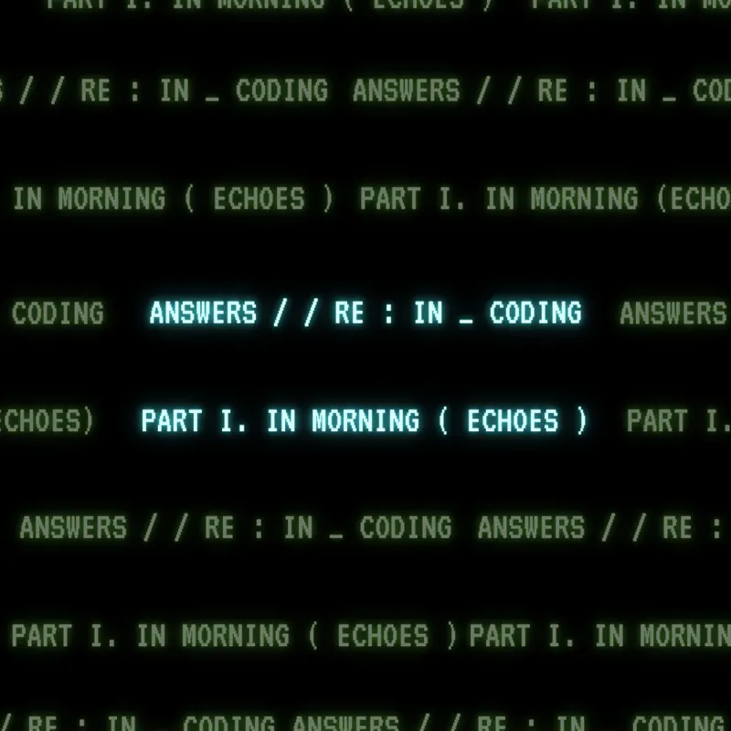
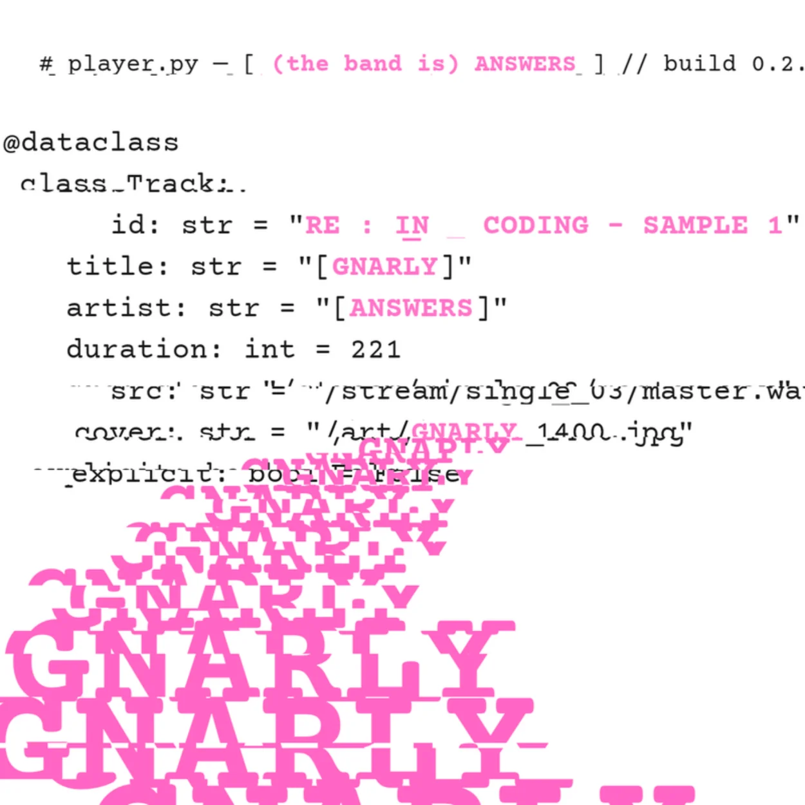
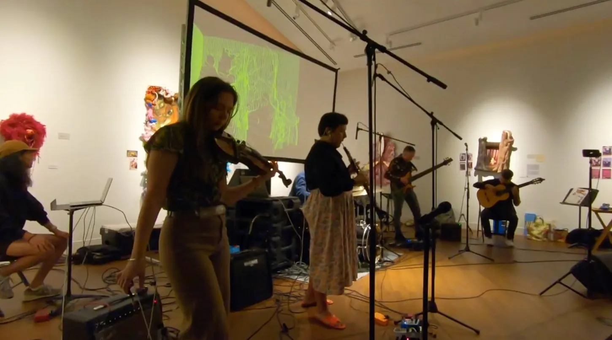
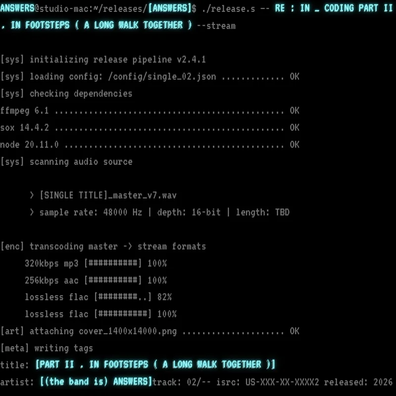
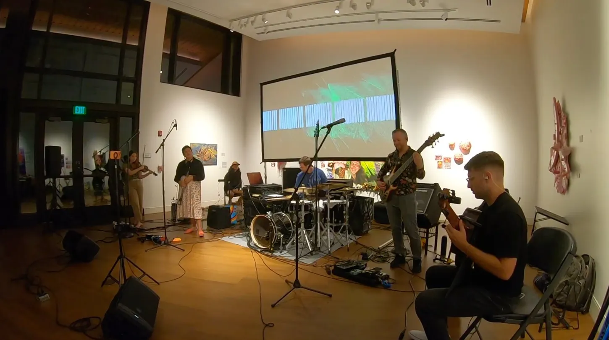
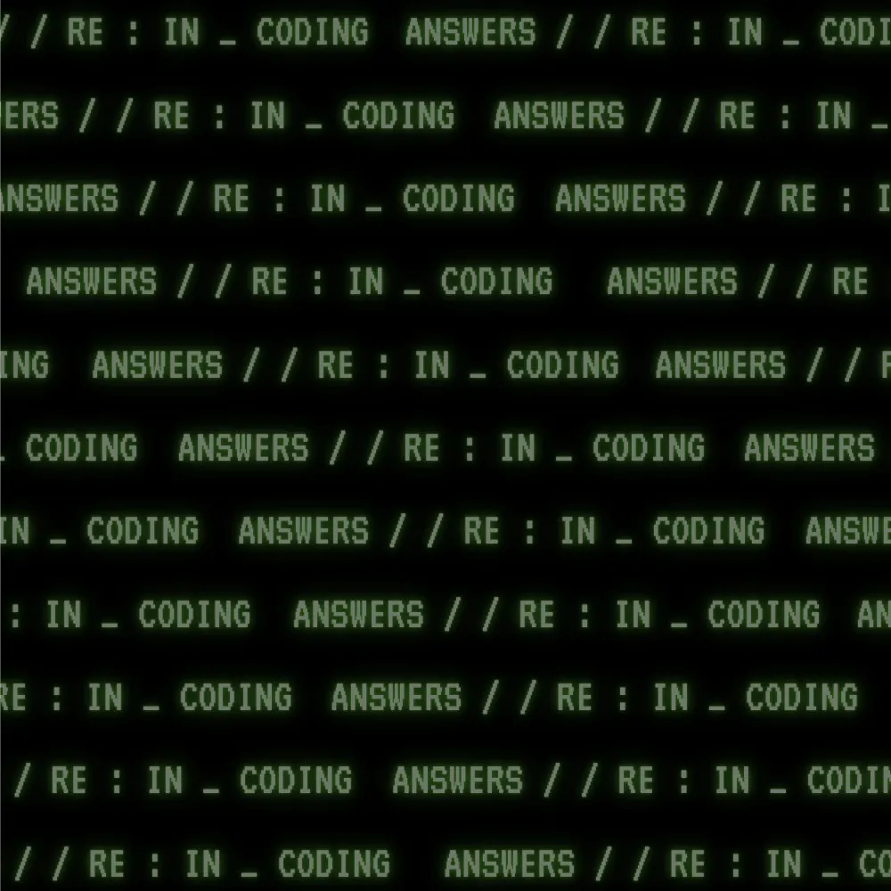
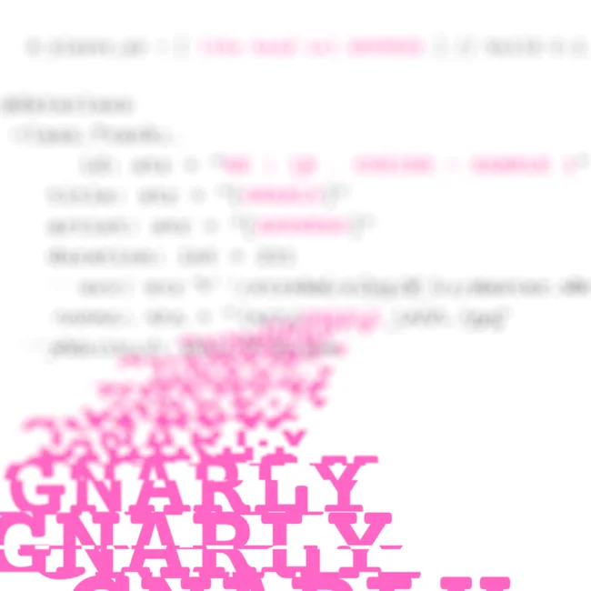

cover
PART I.
In Morning
(echoes)
We encounter the ghosts as the day breaks, sun pierces horizon.
- key
- C
- sample
- Gnarly
re-encoding years of improvised recordings into a live, re-improvised, LiDAR-powered audiovisual experience.
RE:in_coding is the synthesis and evolution of more than two years of improvised recordings, turned into a sampled, re-improvised audio and visual experience. We wanted to explore what it would be like to take a massive amount of improvised recorded material and “re-encode” it: re-imagine it in a completely new way.
Not only are we re-encoding our past material into something new with fresh improvisation, we’re also doing it “in coding”, with live visual art.

We programmatically sampled and ranked our favorite moments from improvisations recorded between 2024 and 2026, then chose five to build the experience around.
On stage, we improvise around and between our past selves, our “ghosts”, evolving and stretching the original material into a performance that’s different every time.
LiDAR cameras capture our 3D forms and feed an audio-responsive cables.gl visual world that changes with every sound we make.
Each movement is born from a sample. We’re releasing all ten as singles, the five movements and the five samples, followed by the full album. 3 of 10 out now on Bandcamp.

cover
(echoes)
We encounter the ghosts as the day breaks, sun pierces horizon.

cover(a long walk together)
We begin to explore, converse, we shift in and out of those that came before and ahead.
(memory is creation)
We encounter that memory is unreliable, all recollection is reconstruction, uncertainty strikes.
(we get to choose)
We commit to the now by invoking our attention, committing to the never-ending conversation, running forwards while forever creating what trails behind.
(isn’t it all that it is)
We honor what was/is/will be, observation as remembrance, memory as a verb.



RE:in_coding runs one to two hours and is different every time. Want to bring it to your venue or festival?
get in touch